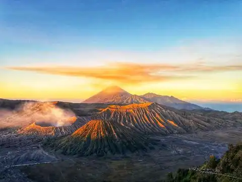

Sunrise · JeepPlanet Bromo
Harga paket / peserta
Rp550.000 / orang
Meeting point
Seluruh Kota Malang
Penjemputan mulai 00.30 WIB
Seluruh Kota Malang
Penjemputan mulai 00.30 WIB
Mengejar matahari terbit, lalu menjelajah sudut-sudut ikonik Bromo dengan jeep.
Sunrise Planet BromoSavannaPasir BerbisikBukit Teletubbies
Lihat itinerary & fasilitas
Rangkaian perjalanan
- Penjemputan mulai dari wilayah Kota Malang.
- Sunrise Planet Bromo, Savana, Pasir Berbisik, Bukit Widodaren, Bukit Teletubbies, dan Watu Adem.
- Kembali ke basecamp.
- Perkiraan tiba di Malang.
Waktu kembali merupakan perkiraan yang tercantum di flyer, bukan jadwal keberangkatan aktif.
Termasuk dalam paket
- Transportasi PP Malang kota–basecamp
- Jeep, tiket masuk TN BTS, dokumentasi drone & foto
- Guide profesional
Tidak termasuk
Daftar pengecualian tidak dirinci di flyer. Tanyakan biaya tambahan atau kebutuhan pribadi ke admin.